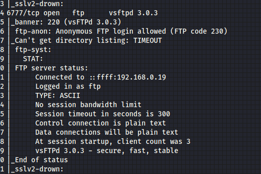
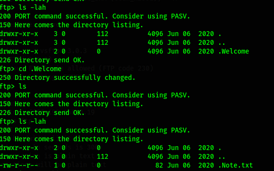
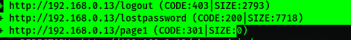
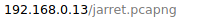
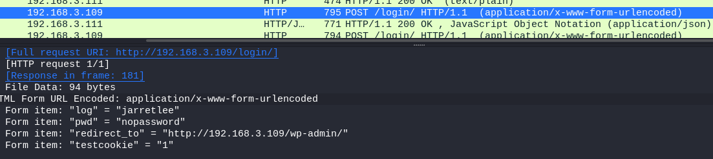
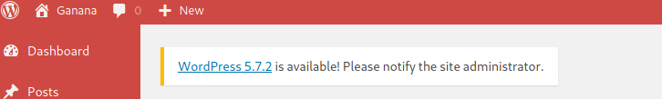
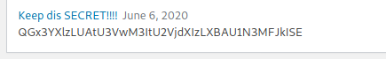
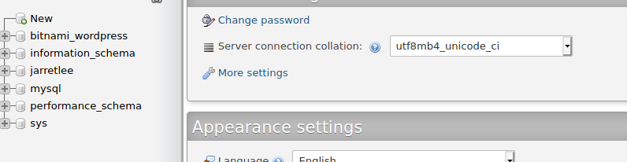

Comenzamos buscando la ip con netdiscover.
Entramos a la página con la dirección que obtuvimos en el explorador.
Revisamos los archivos y encontramos un acceso a ftp.
Revisando los archivos pero no había nada más que una nota, posiblemente es una trampa para perder tiempo.
Vamos a revisar todos los link que nos muestra dirb y encontramos el login.
Hacemos un escaneo con wpscan mientras revisamos los demás links y encontramos algo más interesante.
wpscan no nos arrojó nada, más que parámetros normales, aquí viene la parte que no logré resolver (fail completamente), así que buscando encontré que había una manera.
Bueno, ya sin ver más, el objetivo es esforzar a nuetra mente a pensar que más podemos hacer, así que sin flojera, revisemos el pcapng, pero vamos a filtrarlo, así quebusquemos por http, y como vamos avanzando, vemos que nos ponen trampas, tiene varios intentos de contraseña... podemos retomar tomas, pero también tiene el login cierta cantidad de intentos antes de ser bloqueados.
El último es el que necesitamos, y entramos.
Desafortunadamente no podemos hacer nada porque es un usuario sin privilegios, así que vayamos a otro link encontrado por dirb, phpmyadmin, pero para entrar revisamos la página y encontramos un código en base64.
Buscamos a los usuarios, y encontramos que en realidad hay 2, podríamos intentar meter un tercero pero no sé como encripta la contraseña, así que solo hagamos un cambio, metamos la contraseña que ya sabemos en el lugar del otro usuario.
Nuevamente entramos y lo mejor, es admin.
Metemos un plugin en php y logramos acceso al servidor.
Regla básica, cada contraseña encontrada intenta usarla en otros lados.
inmediatamente encontramos un archivo que dice backups, lo revisamos y parece una contraseña, vamos con john a ver que encontramos.
No encontramos algo interesante con find, pero si con id, vemos que usa docker, así que hagamos root con eso.
Listo.